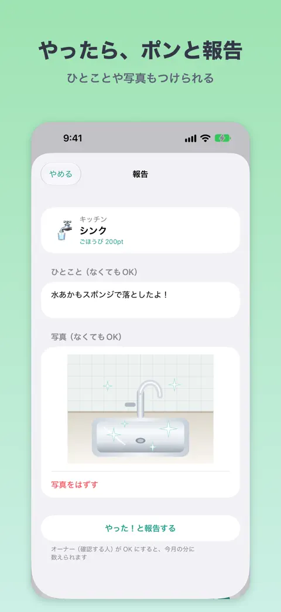
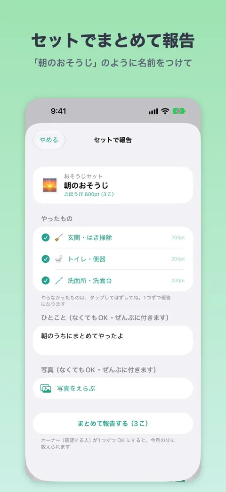
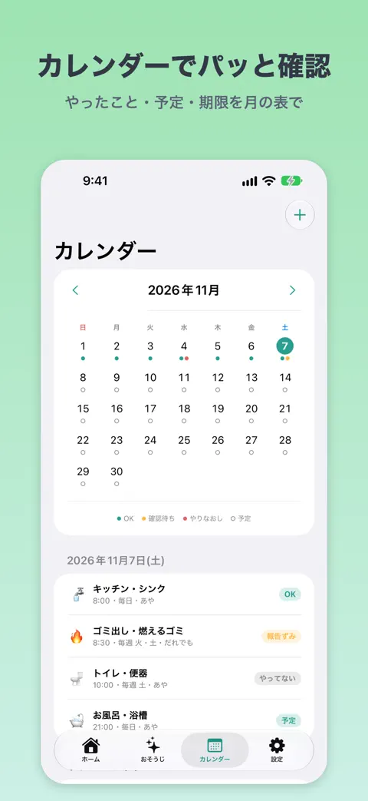

家事分担アプリ（iPhone）
居候お掃除マン
家のおそうじを、
気持ちよく分担。
おそうじをしたら「やった」と報告。もう1人が確認して OK を出すと、ごほうびとして数えられます。いっしょに住む人と、家のおそうじを分担するアプリです。
- 会員登録なし
- 6人まで
- 予定と通知
- 広告なし
無料・広告なし／iPhone（iOS 17 以降）





← 横にスクロールできます →
こんな人におすすめ
- 家族やルームメイトと、おそうじの分担を決めたい人
- 「やった」「ありがとう」を見える形にしたい人
- おてつだいに、ごほうびのしくみを作りたい人
遊び方は3ステップ
- 家をつくる1人が「家」をつくると6文字のコードが出ます。ほかの人はコードで参加。
- 報告するおそうじをしたら「やった」。ひとことや写真も付けられます。
- 確認する確認する人が「OK」か「やりなおし」を選びます。
特徴
- 6人まで1つの家に入れる人数
- 2段階のカテゴリキッチン → シンク・コンロ・換気扇
- 毎日・毎週・毎月おそうじの予定時刻になると担当の人にお知らせ
- 広告なし追跡もなし利用状況の分析もしません
くわしい使い方
1人が「家をつくる」と、6文字の家のコードが出ます。ほかの人は「コードで入る」にそのコードを入れて参加します。会員登録やパスワードはいりません。
- 報告：おそうじをしたら「おそうじ」タブで「やった」を押します。ひとことや写真も付けられます
- 確認：オーナー（確認する人）が、ホームの「確認待ち」から「OK」か「やりなおし」を選びます。自分の報告は自分で OK にできません
- 依頼：オーナーは「これやってね」と依頼を出せます。期限やおまけのポイントも付けられます
- おそうじの予定：毎日・毎週・毎月の予定を登録すると、ホームに「今日やること」が出て、時間になると通知でお知らせします
- ごほうびポイント：OK になった報告は、家で決めたポイントとして週ごと・月ごとに集計されます。上限・ボーナス・人ごとの設定もできます。ポイントはアプリの中で数えて表示するだけのものです
よくある質問
無料ですか？
はい、無料でダウンロードして遊べます（広告なし）。App Store のページからどうぞ。
どの端末で使えますか？
iPhone（iOS 17 以降）で使えます。Android 版はありません。
OK が押せない
自分の報告は自分で確認できません。もう1人のメンバーが「オーナー（確認する人）」の役割になって確認してください。役割は「設定」タブのメンバーから変えられます。
通知が来ない
iPhone の「設定」アプリ → 通知 → 居候お掃除マン で通知を許可してください。アプリの「設定」→「通知」で、種類ごとのオン・オフや、夜に送らない時間帯を変えられます。
家を出たい・アカウントを消したい
「設定」タブから家を出られます。いちばん下の「アカウントを削除」で、アカウントと自分の報告・写真をサーバーから削除できます。
機種変更したい
アカウントは端末ごとの匿名アカウントです。新しい iPhone では、もう一度家のコードで入ってください（前の報告の記録は家に残ります）。
お問い合わせ
不具合やご要望は、メールでお知らせください。お使いの iPhone の機種と iOS のバージョンを書いていただけると助かります。